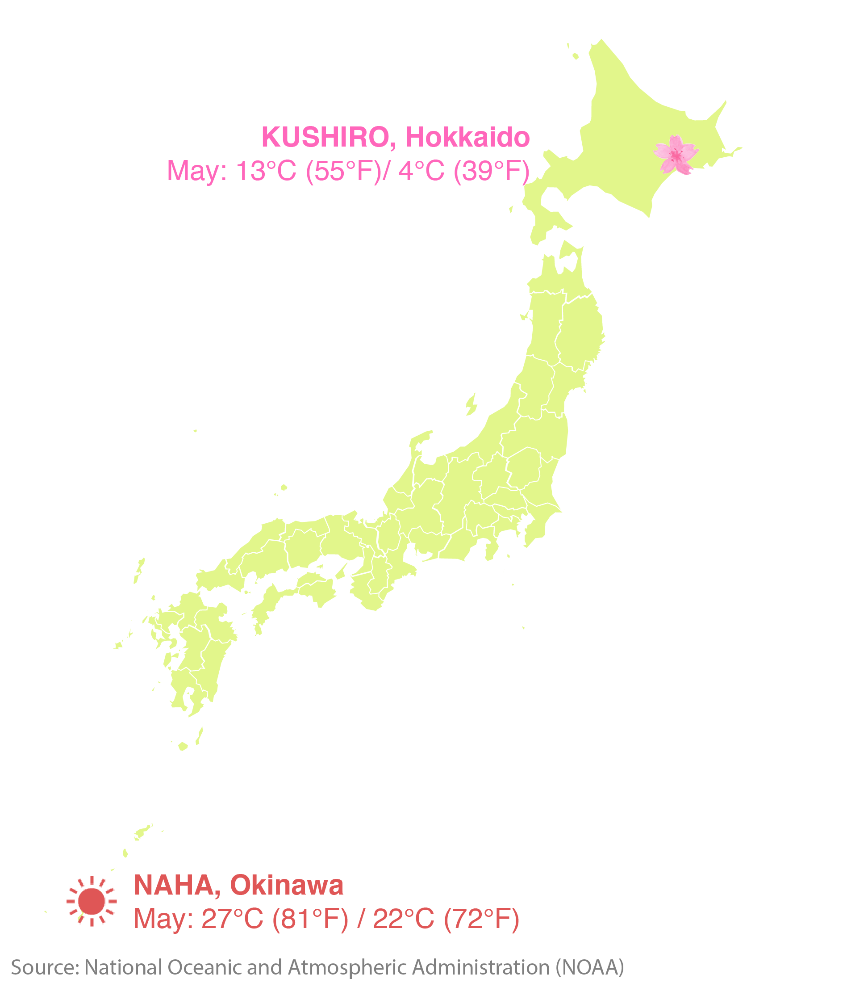

Cherry blossoms in January? Go to Okinawa
Cherry blossoms bloom early in Okinawa, the cluster of islands in the southern-most part of Japan. In Naha, the capital of Okinawa prefecture, cherry blossoms typically bloom from mid January to early February. Sometimes, they even begin blooming in late December.
Source: Japan Meteorological Agency
Note: Chart shows the median dates for when cherry blossoms first bloomed and when they hit peak bloom from 2001-2009.
Cherry blossoms in May? Go north
March is the peak cherry blossom season in Japan - you can go to Tokyo, Kyoto, or Osaka and most likely catch them in bloom. But if you are visiting Japan in April or May, go up north to Fukushima, Aomori or Hokkaido to revel in the flurry of fluttering sakura petals.
Source: Japan Meteorological Agency
Note: Chart shows the median dates for when cherry blossoms first bloomed and when they hit peak bloom from 2001-2009.
Kushiro city in the northern island of Hokkaido is where cherry blossoms bloom the latest in Japan.
From mid-to-late May, seven hundred sakura trees bloom in Beppo Park, giving you one last chance to enjoy spring.
While cherry blossoms are blooming in Kushiro, Okinawa is sliding into summer. It's 22 to 27 degrees Celcius in Naha, and if you time it right, you can drink sake under the sakura in Kushiro then hop over to Naha for its annual Naha haarii festival, or Naha dragonboat race. This race, which originated in China and was transmitted to Okinawa about 600 years ago, is the largest dragonboat race in Okinawa.
